From Chaos to Clarity: Cleaning and Analyzing Dirty Restaurant Sales Data Using R
Moshood A. Garuba
2025-05-05
Section 1 - Background:
In the bustling world of restaurants, daily sales data is a goldmine—but only if it’s clean and structured. Unfortunately, real-life data is rarely pristine. Missing values, inconsistencies, and incomplete entries are the norm rather than the exception. This project tackles one such challenge using a “dirty” restaurant sales dataset containing 17,534 transactions across starters, main dishes, desserts, drinks, and side dishes.
The Problem:
The presence of dirt in data—such as missing categories, inconsistent entries, and incomplete transaction details—often makes analysis unreliable or impossible. Businesses that fail to clean and understand their data risk losing valuable insights that could improve operations, menu offerings, or customer satisfaction.
Data Strategy:
- Data Importation
- Data Cleaning
- Exploratory Data Analysis
- Statistical Modeling and Inference
Expected Outcome:
By the end of this project, the cleaned dataset will offer a reliable foundation for future analysis and modeling. Business insights—such as what items are most often paired, what times of day generate the most revenue, or what types of sales are prone to missing info—will be clearly visualized and discussed.
Section 2 - Data Importation and Loading of Libraries
# Load required libraries
library(tidyverse)
library(lubridate)
library(readr)
library(janitor)
library(dplyr)
library(kableExtra)
library(naniar)
library(lubridate)
library(dlookr)
library(patchwork)
library(gt)
library(summarytools)
# Loading your data
mydata <- read.csv("restaurant_sales_data.csv")
#checking the names of the variables
names(mydata)## [1] "Order.ID" "Customer.ID" "Category" "Item"
## [5] "Price" "Quantity" "Order.Total" "Order.Date"
## [9] "Payment.Method"#Checking the variable structure
str(mydata)## 'data.frame': 17534 obs. of 9 variables:
## $ Order.ID : chr "ORD_705844" "ORD_338528" "ORD_443849" "ORD_630508" ...
## $ Customer.ID : chr "CUST_092" "CUST_021" "CUST_029" "CUST_075" ...
## $ Category : chr "Side Dishes" "Side Dishes" "Main Dishes" "Drinks" ...
## $ Item : chr "Side Salad" "Mashed Potatoes" "Grilled Chicken" "" ...
## $ Price : num 3 4 15 NA 12 18 4 15 6 14 ...
## $ Quantity : num 1 3 4 2 4 5 5 3 2 5 ...
## $ Order.Total : num 3 12 60 5 48 90 20 45 12 70 ...
## $ Order.Date : chr "2023-12-21" "2023-05-19" "2023-09-27" "2022-08-09" ...
## $ Payment.Method: chr "Credit Card" "Digital Wallet" "Credit Card" "Credit Card" ...# Dimension
dim(mydata)## [1] 17534 9#Checking the first few observations
head(mydata) %>% kable()| Order.ID | Customer.ID | Category | Item | Price | Quantity | Order.Total | Order.Date | Payment.Method |
|---|---|---|---|---|---|---|---|---|
| ORD_705844 | CUST_092 | Side Dishes | Side Salad | 3 | 1 | 3 | 2023-12-21 | Credit Card |
| ORD_338528 | CUST_021 | Side Dishes | Mashed Potatoes | 4 | 3 | 12 | 2023-05-19 | Digital Wallet |
| ORD_443849 | CUST_029 | Main Dishes | Grilled Chicken | 15 | 4 | 60 | 2023-09-27 | Credit Card |
| ORD_630508 | CUST_075 | Drinks | NA | 2 | 5 | 2022-08-09 | Credit Card | |
| ORD_648269 | CUST_031 | Main Dishes | Pasta Alfredo | 12 | 4 | 48 | 2022-05-15 | Cash |
| ORD_381680 | CUST_031 | Main Dishes | Salmon | 18 | 5 | 90 | 2022-07-20 | Digital Wallet |
#Checking the last few observations
tail(mydata) %>% kable()| Order.ID | Customer.ID | Category | Item | Price | Quantity | Order.Total | Order.Date | Payment.Method | |
|---|---|---|---|---|---|---|---|---|---|
| 17529 | ORD_721774 | CUST_006 | Side Dishes | Mashed Potatoes | 4 | 5 | 20 | 2022-04-22 | Digital Wallet |
| 17530 | ORD_320102 | CUST_021 | Drinks | NA | 4 | 4 | 2023-12-23 | Cash | |
| 17531 | ORD_974128 | CUST_069 | Desserts | Ice Cream | 5 | 3 | 15 | 2023-12-18 | Cash |
| 17532 | ORD_108324 | CUST_050 | Desserts | Ice Cream | 5 | 4 | 20 | 2022-05-20 | Digital Wallet |
| 17533 | ORD_612647 | CUST_073 | Side Dishes | Mashed Potatoes | 4 | 2 | 8 | 2022-01-27 | Digital Wallet |
| 17534 | ORD_680707 | CUST_006 | Desserts | 7 | 4 | 28 | 2023-01-07 |
Section 3/4 - Data Cleaning (Cleaning/Tidying and Transforming):
mydata %>%
gg_miss_var()+
labs(title = "Visaulization of the Missing variable")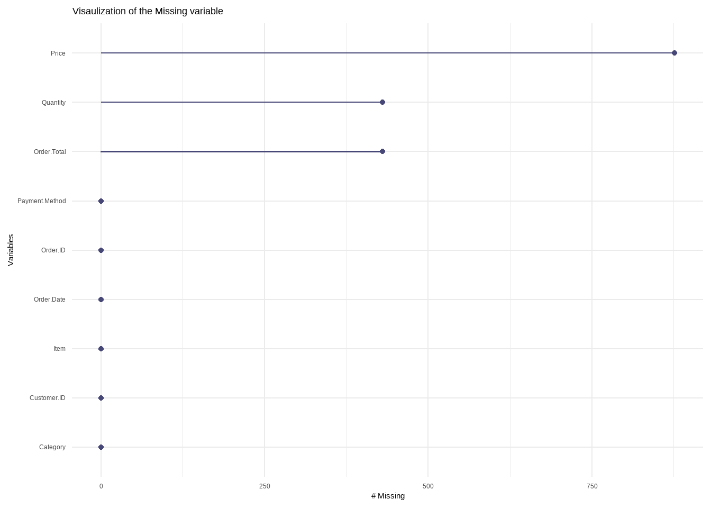
sum(!complete.cases(mydata) == T)## [1] 876876 observations are missing in the dataset. We need to check the pattern of missing and develop a strategy for adjusting the missingness either by omition or imputation method using some machine learning algorithms.
plot_na_pareto(mydata)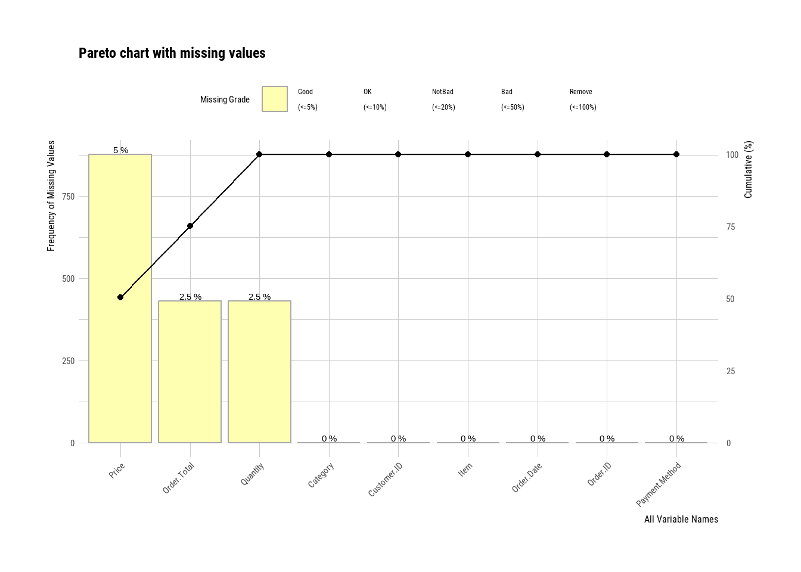
Observations: From the Pareto na missing chart is show that the missing is fair and we can impute and fill the missing observations using machine learning algorithms called Predictive mean matching.
# Step 1: Perform multiple imputation
imputed_data <- mice::mice(mydata, method = "pmm")##
## iter imp variable
## 1 1 Price Quantity Order.Total
## 1 2 Price Quantity Order.Total
## 1 3 Price Quantity Order.Total
## 1 4 Price Quantity Order.Total
## 1 5 Price Quantity Order.Total
## 2 1 Price Quantity Order.Total
## 2 2 Price Quantity Order.Total
## 2 3 Price Quantity Order.Total
## 2 4 Price Quantity Order.Total
## 2 5 Price Quantity Order.Total
## 3 1 Price Quantity Order.Total
## 3 2 Price Quantity Order.Total
## 3 3 Price Quantity Order.Total
## 3 4 Price Quantity Order.Total
## 3 5 Price Quantity Order.Total
## 4 1 Price Quantity Order.Total
## 4 2 Price Quantity Order.Total
## 4 3 Price Quantity Order.Total
## 4 4 Price Quantity Order.Total
## 4 5 Price Quantity Order.Total
## 5 1 Price Quantity Order.Total
## 5 2 Price Quantity Order.Total
## 5 3 Price Quantity Order.Total
## 5 4 Price Quantity Order.Total
## 5 5 Price Quantity Order.Total# Step 2: Extract the completed dataset (e.g., first imputation)
clean_data <- mice::complete(imputed_data, 1)
dim(clean_data)## [1] 17534 9gg_miss_var(clean_data)+
labs(title = "Visaulization of the Missing variable after Imputation")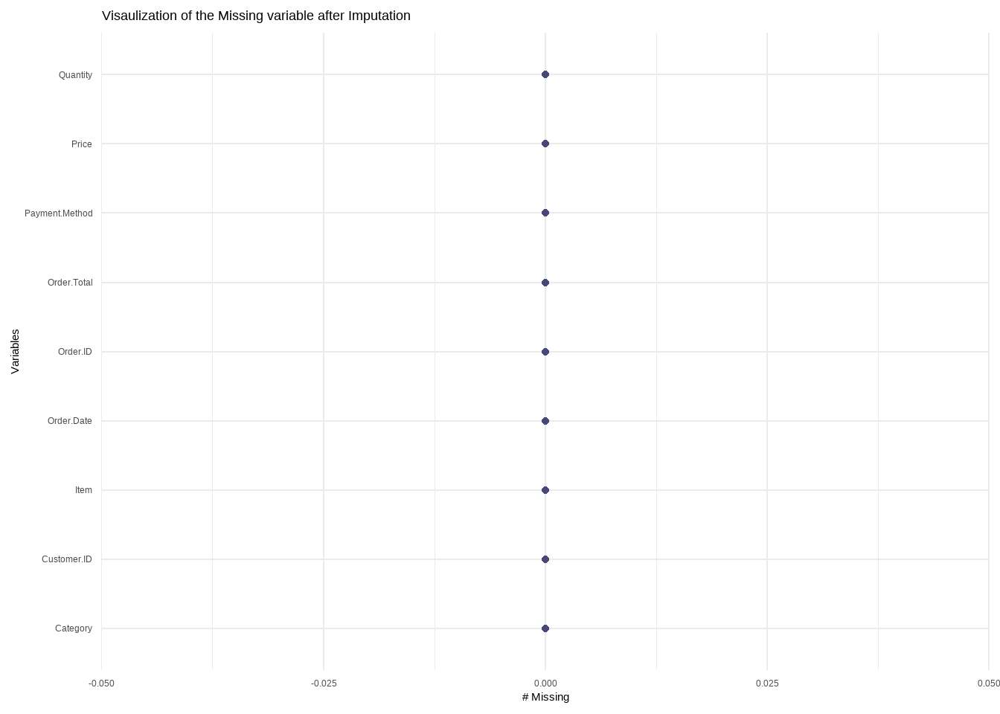
Observation: The only data problem is missing
observation which has been corrected using Predictive mean
matching techniques embended in mice() function
and mice package.
Section 5: Data Analysis (Visualizing and summarizing):
Univariate analysis:
1. Distribution of Order Totals
ggplot(clean_data, aes(x = Order.Total)) +
geom_histogram(binwidth = 5, fill = "steelblue", color = "white") +
labs(title = "Distribution of Order Totals", x = "Order Total", y = "Count") +
theme_minimal()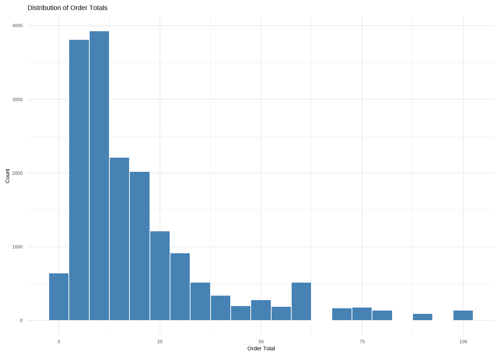
2. Frequency of Payment Methods
ggplot(clean_data, aes(x = Payment.Method)) +
geom_bar(fill = "darkcyan") +
labs(title = "Frequency of Payment Methods", x = "Payment Method", y = "Count") +
theme_minimal()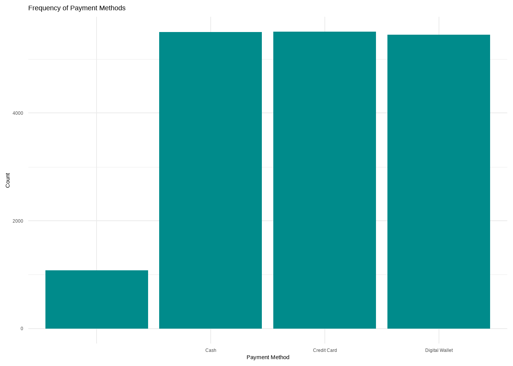
3. Frequency of Item Categories
ggplot(clean_data, aes(x = reorder(Category, Category, function(x)-length(x)))) +
geom_bar(fill = "orange") +
labs(title = "Item Category Frequency", x = "Category", y = "Count") +
theme_minimal() +
coord_flip()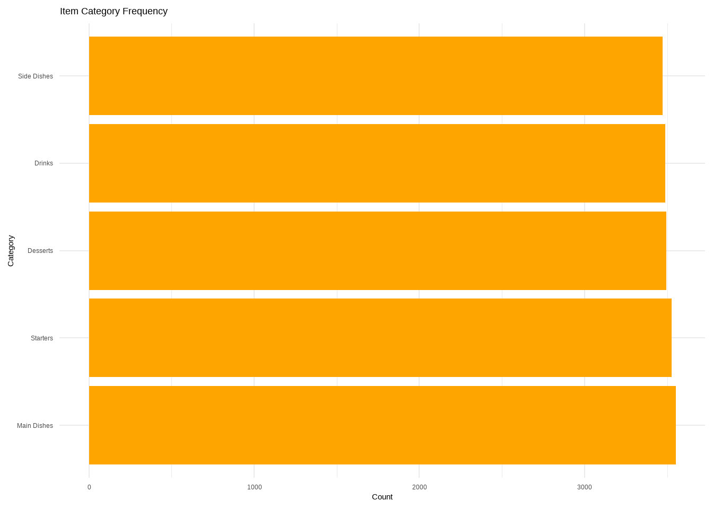
Univariate Analysis
1. Average Order Total by Payment Method
clean_data %>%
group_by(Payment.Method) %>%
summarise(Avg.Order.Total = mean(Order.Total, na.rm = TRUE)) %>%
ggplot(aes(x = reorder(Payment.Method, Avg.Order.Total), y = Avg.Order.Total)) +
geom_col(fill = "forestgreen") +
labs(title = "Average Order Total by Payment Method", x = "Payment Method", y = "Average Total") +
theme_minimal()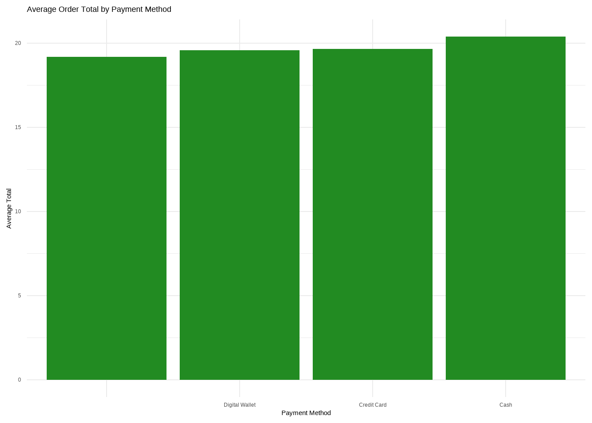
2. Boxplot of Price by Category
ggplot(clean_data, aes(x = Category, y = Price)) +
geom_boxplot(fill = "plum") +
labs(title = "Price by Category", x = "Category", y = "Price") +
theme_minimal() +
coord_flip()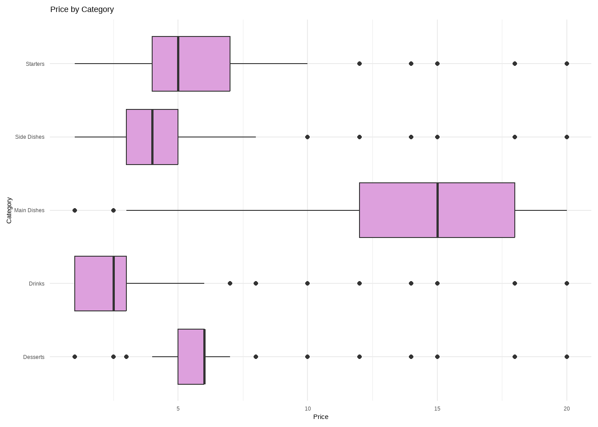
3. Relationship between Quantity and Order Total
ggplot(clean_data, aes(x = Quantity, y = Order.Total)) +
geom_point(alpha = 0.4, color = "blue") +
geom_smooth(method = "lm", se = FALSE, color = "red") +
labs(title = "Quantity vs Order Total", x = "Quantity", y = "Order Total") +
theme_minimal()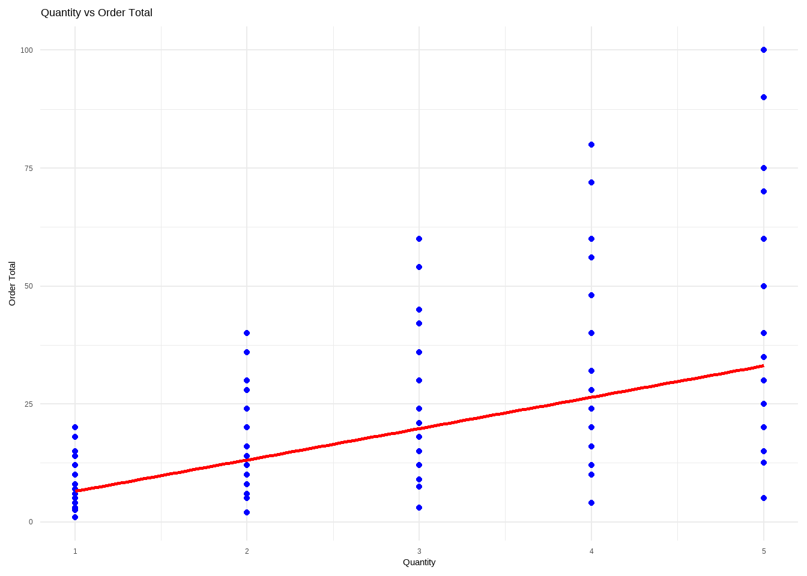
4. Total Revenue by Category
clean_data %>%
group_by(Category) %>%
summarise(Total.Revenue = sum(Order.Total, na.rm = TRUE)) %>%
ggplot(aes(x = reorder(Category, Total.Revenue), y = Total.Revenue)) +
geom_col(fill = "darkorange") +
labs(title = "Total Revenue by Category", x = "Category", y = "Revenue") +
theme_minimal() +
coord_flip()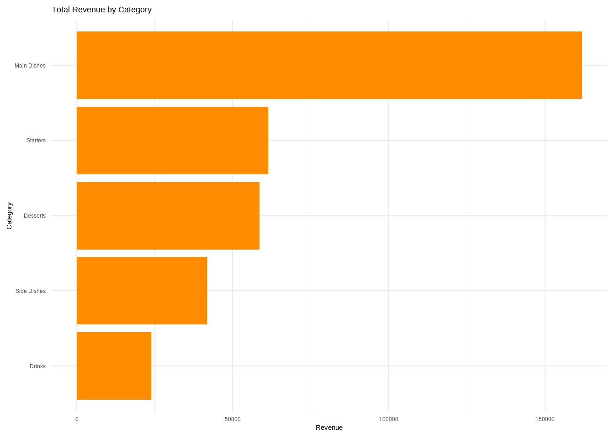
Statistical Modeling and Inference
clean_data %>%
ggplot(aes(x = Price, y = Order.Total))+
geom_point(aes(colour = Payment.Method))+
labs(title = "Correlational Plot", y = "Total Order")+
theme_minimal()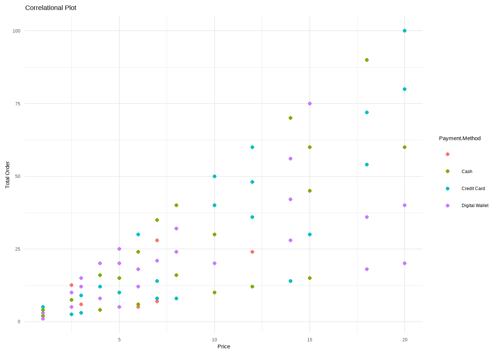
model<-lm(Order.Total~Price, data = clean_data)
summary(model)##
## Call:
## lm(formula = Order.Total ~ Price, data = clean_data)
##
## Residuals:
## Min 1Q Median 3Q Max
## -40.272 -5.934 0.026 5.076 39.728
##
## Coefficients:
## Estimate Std. Error t value Pr(>|t|)
## (Intercept) -0.12522 0.14876 -0.842 0.4
## Price 3.01987 0.01813 166.534 <2e-16 ***
## ---
## Signif. codes: 0 '***' 0.001 '**' 0.01 '*' 0.05 '.' 0.1 ' ' 1
##
## Residual standard error: 11.68 on 17532 degrees of freedom
## Multiple R-squared: 0.6127, Adjusted R-squared: 0.6127
## F-statistic: 2.773e+04 on 1 and 17532 DF, p-value: < 2.2e-16A linear regression model was fitted using ordinary least squares
(OLS) to predict Order.Total based on Price.
The model revealed a statistically significant and substantial
relationship, explaining 62% of the variance in order totals (R²
= 0.62, F(1, 17,532) = 28,132.81, p <
.001). The intercept of the model was -0.23 (95% CI [-0.52, 0.07]),
which was not statistically significant (t = -1.52, p
= 0.128), indicating no meaningful prediction when price is zero.
However, the effect of Price was highly significant and
positive (β = 3.05, 95% CI [3.01, 3.08], t =
167.73, p < .001), with a standardized beta of
0.78 (95% CI [0.78, 0.79]), suggesting that higher
prices are strongly associated with higher order totals. Overall, the
model demonstrates that price is a strong and reliable predictor of
total sales.
Shinny App
I developed a simple interactive dashboard to monitor restaurant order data, showcasing key metrics such as total sales, number of orders, and average order value. Incorporated visual summaries using sales trends over time, providing actionable insights for operations and decision-making.
library(shiny)
library(ggplot2)
library(dplyr)
# UI
ui <- fluidPage(
titlePanel("Simple Order Dashboard"),
sidebarLayout(
sidebarPanel(
selectInput("category", "Category:",
choices = c("All", unique(clean_data$Category))),
selectInput("payment", "Payment Method:",
choices = c("All", unique(clean_data$`Payment.Method`)))
),
mainPanel(
tableOutput("dataTable"),
plotOutput("salesPlot")
)
)
)
# Server
server <- function(input, output) {
filteredData <- reactive({
data <- clean_data
data$Order.Date <- as.Date(data$Order.Date)
if (input$category != "All") {
data <- data[data$Category == input$category, ]
}
if (input$payment != "All") {
data <- data[data$`Payment.Method` == input$payment, ]
}
data
})
output$dataTable <- renderTable({
head(filteredData(), 20) # Show only first 20 rows for simplicity
})
output$salesPlot <- renderPlot({
df <- filteredData() %>%
group_by(Order.Date) %>%
summarise(Total = sum(Order.Total, na.rm = TRUE))
ggplot(df, aes(x = Order.Date, y = Total)) +
geom_line(color = "blue") +
labs(title = "Total Sales Over Time", x = "Date", y = "Sales ($)")
})
}
# Run the app
shinyApp(ui = ui, server = server)